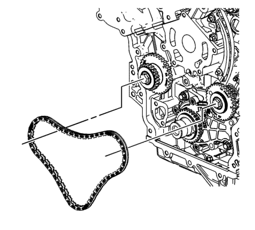
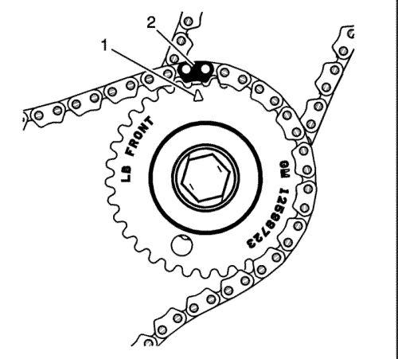
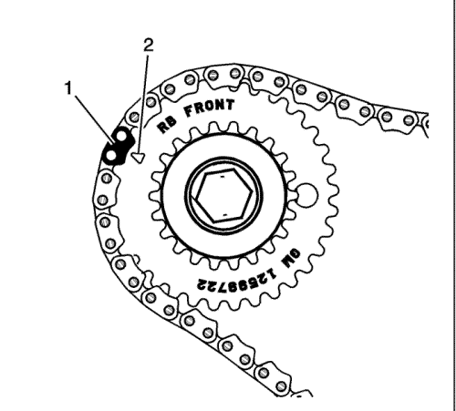
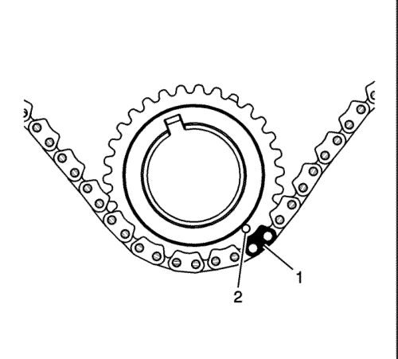
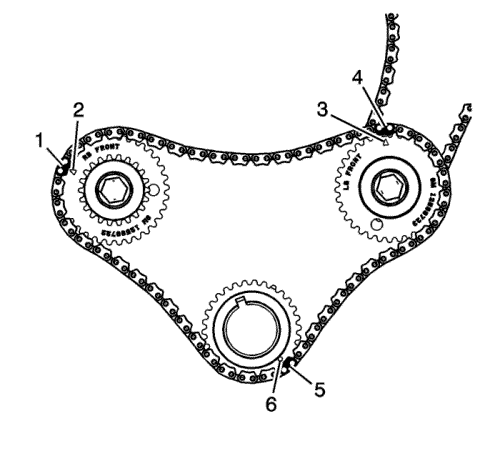

Montaje de la cadena de accionamiento intermedia primaria del árbol de levas

Nota: Asegúrese de que el cigüeñal está en la posición de montaje de la fase uno de accionamiento de la distribución.
Monte la cadena de accionamiento primaria de árbol de levas.
Envuelva la cadena de accionamiento primaria de árbol de levas alrededor de los engranes más grandes de cada piñón loco de cadena de accionamiento intermedia de árbol de levas y del piñón del cigüeñal.

La marca de distribución (1) del piñón loco de la cadena de accionamiento intermedia izquierda de árbol de levas quedará alineada con el eslabón (2) de la cadena de accionamiento primaria de árbol de levas de distribución.

La marca de distribución (2) del piñón loco de la cadena de accionamiento intermedia derecha de árbol de levas quedará alineada con el eslabón (1) de la cadena de accionamiento primaria de árbol de levas de distribución.

La marca de distribución (2) del piñón del cigüeñal se alineará con un eslabón (1) de la cadena de accionamiento de árbol de levas distribución.

Asegúrese de que todas las marcas de distribución (2, 3, 6) estén bien alineadas con los eslabones de la cadena de accionamiento de árbol de levas de distribución (1, 4, 5).